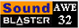

Tramway SDK 0.1.0
Github
Quick links
Home
Get Started
Events
Events are the main form of decoupled data interchange in the framework. People with too much time will recognize it as the «Observer» design pattern.
The main emitter of events is the UI system, which emits an event for every keypress and every mousemove.
There's also the tick and frame events, which are emitted by the Core system for each tick and frame respectively.
Potato frog is emitting some events and potato cat is aware of it, since he has an Event Listener.
Key concepts
Event
It is like a thing that has happened. Each event has a type, a subtype and it contains information about its emitter and has some optional data that can be attached to the event.
Listener
It allows the event system to keep track of all of the other systems, entities and components that are interested in an event.
After a registrant has registered an event listener for a specific event type, the event system will begin dispatching events of said type either to a callback function or to an event handler method of the registrant.
Event types
In order to use an event, you need to know what that event is and what it does. What it means. What does it mean?
These are the events which I have created, which means that I can tell you what they do. If you use someone else's events. you need to ask them what they do. If you have created the events yourself, you will need to ask yourself what you meant by them. This might be difficult, even the greatest philosophers have struggled to understand themselves.
Keypress | KEYPRESS
Emitted every frame that a key is being held down. The subtype field of the event contains a UI::KeyboardKey enumeration number, depending on which key was pressed.
Keydown | KEYDOWN
Same as keypress, except that the event is emitted only on the frame on which the key was pressed down for the first time.
Keyup | KEYUP
Same as keypress, except that the event is emitted only when the key is released.
Keychar | KEYCHAR
Used for text input. Emitted whenever a keyboard key used for text input is pressed. The subtype field contains a UTF-16 encoded codepoint of the text character.
Cursorpos | CURSORPOS
Emitted whenever the mouse cursor pointer position changes. No data.
Frame | FRAME
Emitted every frame. It's very useful when you want to execute some code every frame – simply register a listener with a callback function containing your code.
Tick | TICK
Very similar to the frame event, the main difference being that this event is independent of them frame rate – every second exactly 60 tick events will be emitted.
Selected | SELECTED
Emitted by entities which are selected. Data pointer points to a Value which contains a name, which represents the type of the entity. This event can be used for displaying information about the selected entity, i.e. actions which can be performed on the entity.
Look at | LOOK-AT
Emitted by entities which are looking at something. Data pointer points to a Value which contains a quaternion with the look direction of the entity.
Last event | LAST_EVENT
This is not actually an event.
Programming in C++
#include <framework/event.h>
API documentation
page.
Let's emit our own event!
const name_t m_type = "mongus";
Event event;
event.type = Event::SELECTED;
event.subtype = 420;
event.poster_id = Entity::Find("mongus")->GetID();
event.data = Event::AllocateData<Value>(m_type);
Event::Post(event);
The Event::AllocateData() static method allocates a bit of memory for use with the
event data pointer. This allocated memory gets automatically released when
all of the emitted events have been dispatched.
There are the Event::AddListener() and the
Event::RemoveListener() static methods to add and remove event
listeners respectively, but there is also a smart pointer type which will
automatically remove the listener when deleted.
EventListener keypress;
// creates an event listener
keypress.make(Event::KEYPRESS, this);
// removes an event listener
keypress.clear();
If you want to, you can also create new event types.
event_t frog_event = Event::Register("frog-event");
Scripting in Lua
Emitting an event is very similar to how it is done with the C++ API. The main difference is that we can't attach arbitrary data to the event, instead we are limited to floating point numbers, integers and names, which is the same limitation as with Signals.
event = {}
event.type = tram.event.GetType("my_fancy_event")
event.subtype = 420
event.poster = tram.entity.Find(mongus):GetID()
event.data = "mongus"
tram.event.Post(event)
Registering events and adding event listeners is also similar.
local frog_event = tram.event.Register("frog-event")
tram.event.AddListener(frog_event, function(event)
type_name = tram.event.GetName(event.type)
subtype = event.subtype
poster = tram.entity.Find(event.poster)
data = event.data
print("Event received:",
type_name,
subtype,
poster:GetName(),
data)
end)


